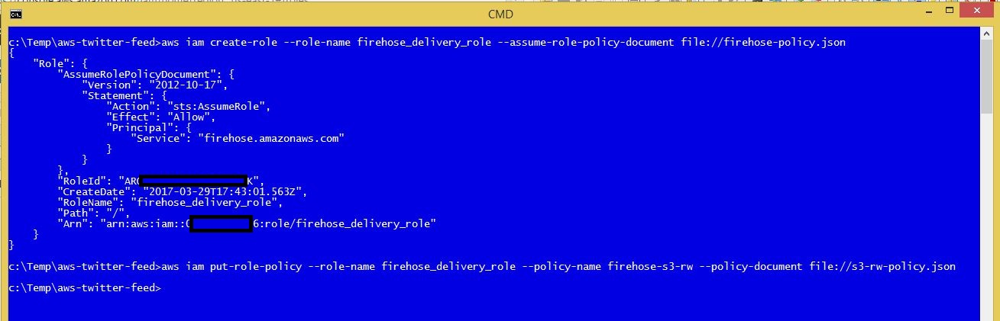
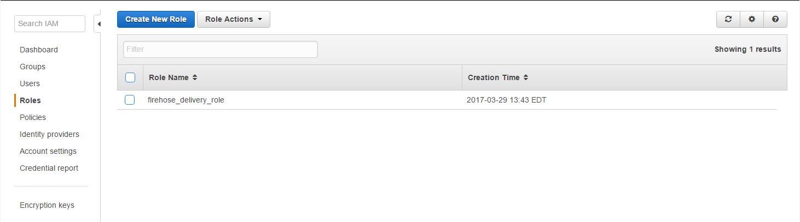
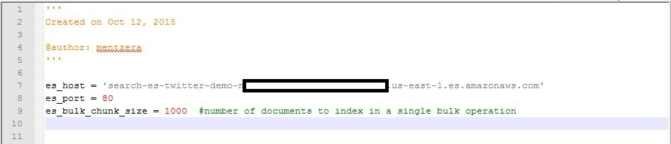
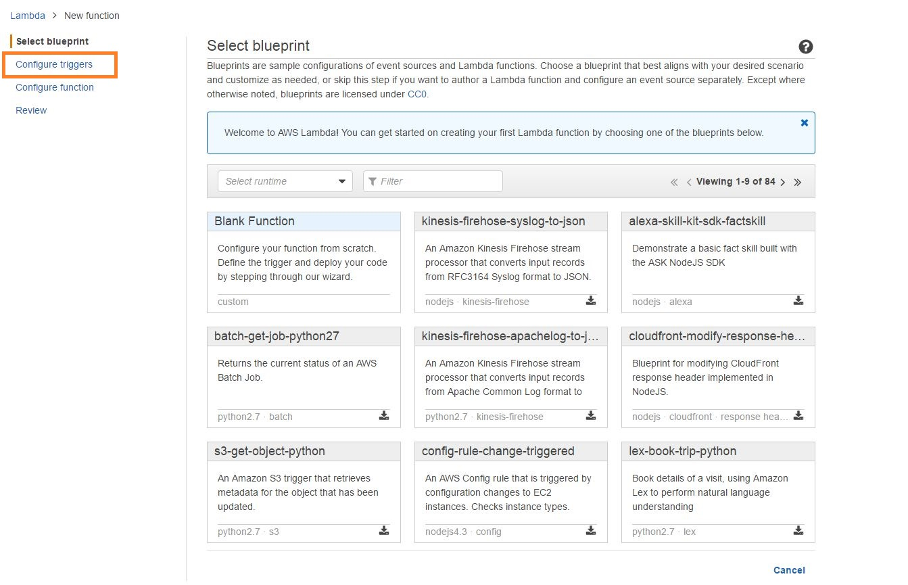
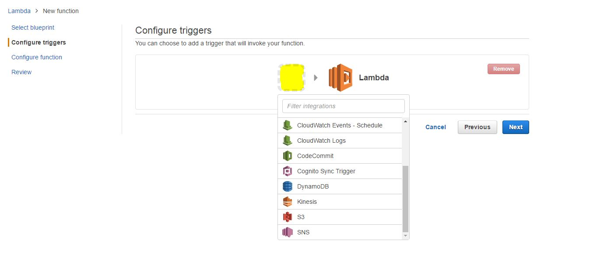
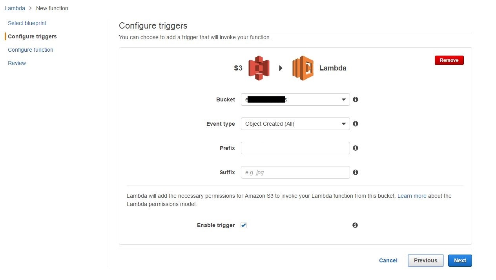

Countinued -- Notes on building a near real time discovery platform
Create an IAM role for Firehose
Create the two policy files that will be uploaded using the AWS command line client. NOTE: On my system, cutting and pasting these lines from the original article introduced various hidden artifacts in the files that caused the upload to fail. If that happens on your system, just retype them. The syntax Assaf gives in the original article is correct.
Edit the s3-rw-policy.json file to use your S3 bucket 
Use the AWS CLI client to upload the files.
Check that the policy has been uploaded properly 
Create a Lambda function
This section deviates from the original quite a bit. The outcome is the same, but the Lambda function setup and configuration process appears to have been updated.
Download the deployment package and unzip to the s3-twitter-to-es-python folder.
Modify the s3-twitter-to-es-python/config.py file. Edit the file so that the value of es_host matches Elasticsearch Service endpoint for your domain. 
Zip the folder content on your local environment as my-s3-twitter-to-es-python.zip NOTE: It is important to zip the folder content not jut zip up the folder itself.
Sign in to the Lambda console.
Choose 'Create a Lambda function'. NOTE: Choose 'Get started now' if this is your first time using Lambda.
Choose 'Configure triggers' from the list of choices at top left of the screen. 
Click inside the dotted lines and choose the S3 source from the drop down list. 
Enter your bucket name and be sure the 'Enable trigger' box is checked. 
On the next screen select:
Name: 's3-twitter-to-es-python'
Runtime: 'Python2.7'
Code entry: 'Upload a .ZIP file' (Click the button to upload the .zip created a few steps ago.)